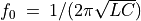
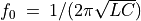

RLC ട്രാൻഷിയൻറ് റെസ്പോൺസ്¶
സർക്യൂട്ടിൽ ഇൻഡക്റ്ററോ കപ്പാസിറ്ററോ മാത്രം ഉണ്ടാവുമ്പോൾ വോൾട്ടേജ് എക്സ്പോണെൻഷ്യൽ ആയാണ് മാറുന്നത് എന്ന് കണ്ടുകഴിഞ്ഞു. എന്നാൽ ഇവ രണ്ടും ഒരുമിച്ചു വരുമ്പോൾ വോൾട്ടേജ് ഓസ്സിലേറ്റ് ചെയ്യാനുള്ള സാധ്യതയുമുണ്ട്. റെസിസ്റ്റൻസും കപ്പാസിറ്റൻസും കുറവും ഇൻഡക്റ്റൻസ് കൂടുതലും ഉള്ള സർക്യൂട്ടുകളാണ് ഓസ്സിലേറ്റ് ചെയ്യുക., ഗണിതഭാഷയിൽ ഡാംപിങ് ഫാക്ടർ  ഒന്നിൽ കുറവുള്ളവ.
ഓസ്സിലേറ്റ് ചെയ്യുന്ന ആവൃത്തി  ആയിരിക്കും .
ഒന്നിൽ കുറവുള്ളവ.
ഓസ്സിലേറ്റ് ചെയ്യുന്ന ആവൃത്തി  ആയിരിക്കും .

- കോയിൽ OD1ൽ നിന്നും A1ലേക്ക് ഘടിപ്പിക്കുക.
- ഒരു 0.1uF കപ്പാസിറ്റർ A1ൽ നിന്ന് ഗ്രൗണ്ടിലേക്ക് ഘടിപ്പിക്കുക.
- A2വിനെ OD1ലേക്ക് ഘടിപ്പിക്കുക
- സ്റ്റെപ് വോൾട്ടേജ് നൽകാനുള്ള ബട്ടൺ അമർത്തുക
- ഡാറ്റ വിശകലനം ചെയ്യുക